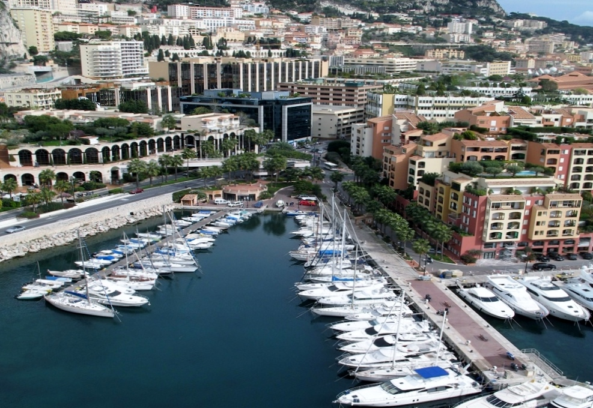
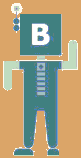

Монако и Монте-Карло - страна миллионеров, казино и Жака Ива Кусто

Монте-Карло - почти эталон курортного мегаполиса, со спрятанными под землю вокзалом и автострадами, и наземными садами и живописным старым городом.
Мы посетим знаменитое казино, оперу и сады, старый город, где, кроме традиционных узких средневековых улочек, мы увидим фотогеничные площади Сен-Николя и Бозио.
Увидим нелицеприятную скульптуру основателя страны и послушаем его неоднозначную историю. Мы можем увидеть смену княжеского караула и посетить один из немногих оставшихся в мире жилых дворцов.
Увидим Форе-Антуан и дворец Юстиции, посетим часовню Милосердия и Кафедральный Собор Монако.
Мы прогуляемся в солнечном и роскошном сердце Монако: живописный порт, банки и магазины, фешенебельные гостиницы и представительства фирм и корпораций.
Здесь же мы увидим и трассу Формулы-1 Монако, самую короткую и самую опасную гоночную трассу в мире.
Экскурсию можно продлить на час, посетив Океанографический музей, один из лучших в мире, где в 90 бассейнах с морской водой обитают огромные черепахи, акулы, мурены, более 4000 разноцветных рыб и целые подводные горы кораллов.
В середине или конце экскурсии мы можем остановиться в кофейне или ресторанчике в соответствии с Вашим вкусом, перекусить или попробовать разнообразное мороженое.
Чтобы поделиться достопримечательностями Монако и Монте-Карло(поделившимся - скидка на эту экскурсию), а также узнать что сейчас на фотографии, жмите на свою соцсеть:
вКонтакте:. Facebook:. МойМир(mail.ru):. Одноклассники:. Twitter:.